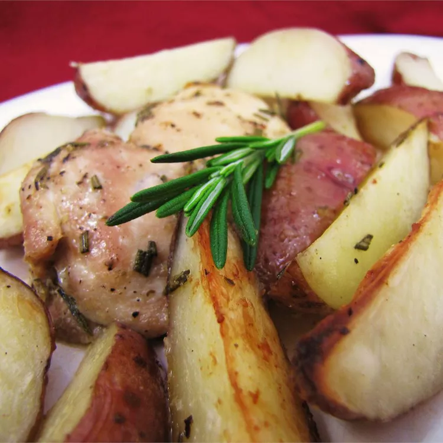

Crispy Rosemary Chicken and Fries
Home page

Description
Prep Time:15 mins. Cook Time:1 hr. Total Time:1 hr 25 mins. Servings:6.
Ingredients
- 8 chicken thighs
- 6 small red potatoes, quartered
- 1/2 cup extra-virgin olive oil, or as needed
- 1 tablespoon chopped fresh rosemary
- 1 1/2 teaspoons chopped fresh oregano
- salt and pepper to taste
Steps
- Preheat the oven to 375 degrees F (190 degrees C).
- Place chicken and potatoes into a large bowl. Pour olive oil over them, and stir to coat. Scatter the chicken and potato pieces in a large baking dish, or cookie sheet with sides. Sprinkle with rosemary, oregano, salt and pepper.
- Bake for 1 hour in the preheated oven, uncovered. Baste during the last 15 minutes for extra crispness.
Nutrition Facts
per serving:
- Calories: 497
- Fat: 32g
- Carbs: 28g
- Protein: 24g